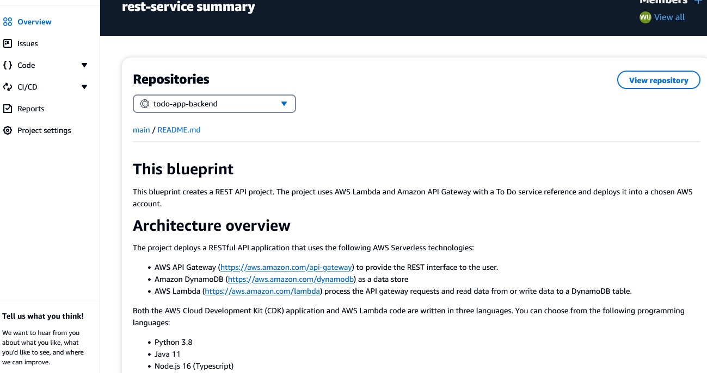
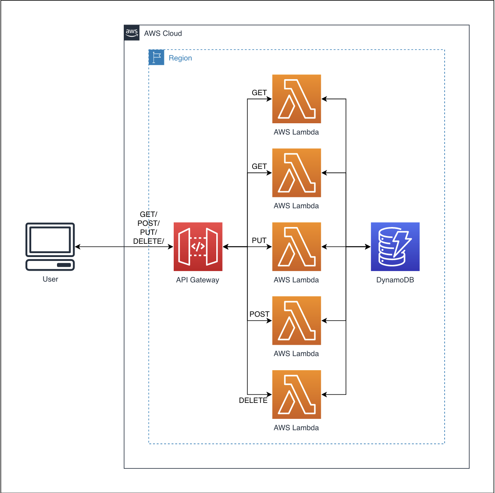

SCC
Brasil
os cloud gurus
Software Cloud Consulting
Your software development, cloud, consulting & shoring company
How to get started with AWS Code Catalyst
By Wolfgang Unger
Introduction
Welcome to this Quickstart and Tutorial on how to get started on AWS Code Catalyst.
Code Catalyst is a new Service to offer a unified software and development service to
enable teams to easier develope and deploy their applications on AWS.
So far we know already CodeCommit, CodeBuild, CodeDeploy and CodePipeline from
the DevTools / DevOps Service Family.
Code Catalyst should kind of replace these 4 services and offer all the functionality
in only one AWS service.
Please notice, so far codecatalyst is still in development, only available in Region
us-west-2.
It is not fully integrated into the AWS Web Console, you will access its UI under this
URL:
AWS CodeCatalyst UI
The reason for this is, CodeCatalyst tries to eliminate the need to have a devtools account (
where
your pipelines are running).
It is still connected to your AWS Account by the space and will be billed via the asociated
account.
Once you opened the Code Catalyst UI you can switch between your spaces and projects.
To understand these 2 entities:
A Space can have multiple projects and it can be in your AWS account or someone
else can invite you into his space in this account. Also you can invite developers in your
space.
Thus under spaces you will see all your spaces and external spaces you have been invited to.
Projects should be not neccessary to explain.
Also you see on the left menu Issues, Code, CI/CD, Reports and Settings.
Under CI/CD are the workflows ( pipelines) and environments.
You have a Scrum Board under Issues were can create issues/tasks and track the progress.
You might know this from other Scrum Tools are also from Azure Devops.
Setup
But lets get started from the very beginning.
In the AWS Web-Console the Service Code Catalyst is already available, but does not yet have many features there.
You can launch the Code Catalyst UI from there.
You will need a Builder ID for this, if you don't have one yet, please create on, it is really simple.
Then you will access the codecatalyst UI as already seen in the first screenshot.
So now it is time to create your first space, you will have to define a name for your Space
and enter the Account ID. As mentioned you can invite co-workers and developers into your space to collaborate with you.
Once you have created the space you can create you first project.
Where you have the following options
I will select a blueprint for a serverless Rest microservice.
It is build with Lambdas ( Python) , API Gateway and Dynamo.
Feel free to select the blueprint of your choice or start from scratch.
After defining some names and options in the wizard, the project was created
Btw I have selected Python as the runtime for the Lambdas, but this is up to you

There comes also a nice architecture diagram with it, lets have a look on it

As we can see, our solution is build up by a API Gateway in front of 5 Lambdas, each one handling one HTTP method and a DynamoDB to persist our items.
Lets have a look in the repo, what files were created by the blueprint template.
You can acess the repo over the main menu Code, were you find also Pull Requests.
You can edit the files in online editor in code catalyst, but now it's time to setup a IDE for further implementations on our new project.
Dev Environment
You can setup a Dev Environment for AWS Cloud9 , for Visual Studio Code or JetBrain. I will create an environment for Visual Studio Code.You should install the AWS Toolkit extension for Visual Studio to continue.
You will then find Code Catalyst in the Developer Tools, were you create a Dev Environment, but also open your existing environments.
I am selecting the just created environment for this project ( in my list there are 2 more environments of earlier projects)
Now I can finally see the project source code in Visual Studio and start to edit the files.
But lets first have a look in the project to understand the structure.
The blueprint project looks like this after creating the project:
Obviously a CDK project was created, the AWS resources will be created with CDK code. Please have also a look into the Readme, were you can find some informations on how to build the project.
We have a app.py defining the stack to be deployed.
We got a cdk.json for project properties.
A requrirements.txt file for the pip modules.
The cdk classes are in the folder python.
There you find also a sub-folder lambda, with the code for the 5 Lambda functions.
Before we create a pipeline ( or workflow how it is named in codecatalyst) to deploy our resources automatically, let's see if we can build and deploy our project inside the IDE.
Since it is a CDK project, some KnowHow on CDK projects is requrired, if you are not familiar with the AWS CDK please have a look into this blog from us:
The first thing you should do is a aws configure on your Dev Environment console to provide the credentials for the CDK commands.
Next you have to activate the virtual environment with this command.
source .venv/bin/activate
Now we have to install the python libs:
pip install -r requirements.txt
Before we can execute the CDK commands, we will have to upate the app.py file.
You already will find some useful comments there.
You should uncomment this line and enter your account ID and region.
env=cdk.Environment(account='xxxxxxxxxxxx', region='us-west-2')
Now we can bootstrap the project:
cdk bootstrap aws://xxxxxxxxxxxx/us-west-2
Have a look into your Account and check the CloudFormation Stacks, you will see the new Stack CDKToolkit Stack in the CloudFormation Console.
Now we can check what CDK Stacks we got in the project.
cdk ls
First lets try a
cdk synth
and now we can deploy with:
cdk deploy
Now we should see a second CFN Stack including the resources of our Blueprint Project,
which are a API Gateway, a DynamoTable and 5 Lambda Functions for the CRUD methods of the API Gateway.
Perfect, the resources were deployed successfully in our account, lets have a look, if everything is in its place and working.
We will find 5 Lamda functions, also a Dynamo table, it was created with only an ID index.
You will see this in the pyhton_stack.py.
You can edit this and adapt the code for your table structure.
Also we can find a API Gateway. Let's test if everything is working.
First we can call the GET (all) method and we should get an empty array as result - since we still don't have items in the table.
So either you can add an item directly in the DynamoDB to get some results there or you use the POST method to insert an item.
Once you have added some items, you will also see them in the GET method.
So looks like everything is working perfect.
Workflow Setup
Now lets create a Pipeline to deploy our project from Code Catalyst.Switch to workflows and press Create worklow.
You have to select the source repository and the branch. You can use here also linked Github repos, I will mention this later on.
Once created open the Definition Yaml File. We need a CDK Deployment, so lets search for a template example.
In the AWS Documentation for Code Catalyst you can find an example
Documentation AWS CDK Deploy Action
Important: The docu is not this good unfortunately.
Under Compute it is indeed not a list, but only a Item . So it is 'Type: EC2' and not '- Type: EC2'
Please change this, or you will get an error on saving the Yaml.
Update the required fields like Connection - Name , - StackName etc and also take a look at the role you define at - Role.
It must have the right permissions and Trust Policy. See the documentation about the role at the end of the documentation.
Note:
We already did a bootstrap from the console, but you should add a bootsrap action to be able to deploy new environments/accounts without a manual bootstrap from your IDE.
See the action definition here
Documentation AWS CDK Bootstrap Action
Once we have defined the workflow with 2 actions, we can start it and it should look like this once finished:
Perfect our workflow is also working now, so the project can be build from within CodeCatalyst and we don't need the cdk commands in the IDE no longer.
Now you can adapt the project for your needs and deploy to your environment.
Please take a look into the documentation how to adapt your worklow and add more actions, for example test or deploy.
More Features
As you can see in the left main menu you have some more features:-You can create Issues and a (Scrum) Board for them.
-A section for your test Reports
-The CI/CD section where you create Worfklows (Pipelines), environments, Secrets and more.
-And the Code Section.
Per default your sources are kept there, you can add git repos there and define as source for your workflows.
But you can also link an external repo here, currently Github and Jira are supported. Interesting that AWS own CodeCommit is not supported yet.
To link a Github Repo you first must install an extension and after this you can link your repo into the Code Section in CodeCatalyst and use it the same way as Source for your worklfows.
As you can see on this image here, I have 2 repos defined, one in CodeCatalyst and a linked Github repo.
Now create your first space and project and have fun with CodeCatalyst!
Have also a look into the Docu of CodeCatalyst on AWS:
Autor

Wolfgang Unger
AWS Architect & Developer
6 x AWS Certified
1 x Azure Certified
A Cloud Guru Instructor
Certified Oracle JEE Architect
Certified Scrum Master
Certified Java Programmer
Passionate surfer & guitar player